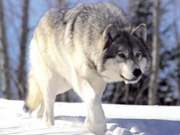
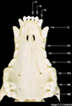
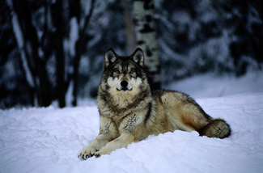

DEFINICIÓN
Canis lupus es una especie de mamífero placentario del orden de los carnívoros. Antiguamente se distribuían por Norteamérica, Europa, Asia y el Oriente Medio. Actualmente, por razones relacionadas con el hombre, incluyendo la caza, los lobos habitan una muy limitada cantidad de lo que fue su territorio.
Clasificada como una especie poco amenazada para su extinción, en algunas regiones, incluyendo la parte continental de los Estados Unidos, la especie está listada como en peligro o amenazada. Los lobos son cazados en la mayoria del mundo por la amenaza que representan para el ganado o como deporte.
El lobo, que es depredador, se halla en una gran cantidad de ecosistemas. Este amplio territorio de hábitat donde los lobos crecen refleja su adaptabilidad como especie, ya que puede vivir en bosques, montañas, tundras,taigas y praderas.
ANATOMÍA
TAMAÑO
El peso y tamaño del lobo puede variar en función a su localización, y tiende a incrementarse proporcionalmente con la latitud (Regla de Bergmann). La altura varía entre 60-90 centímetros hasta el hombro. Tienen un peso entre 32 y 70 kilos, aunque han sido encontrados ejemplares de más de 77 kg en Canadá y Alaska. El lobo salvaje más pesado, cazado en Alaska en 1939, pesaba 80 kg. Hay casos sin confirmar, de lobos cazados en el nordeste ruso que llegaban a los 100 kg de peso. Los lobos más pequeños son los de la sub-especie del lobo árabe, las hembras pueden pesar unos 10 kg en la madurez. Las hembras en una población dada, pesan alrededor de un 20 % menos que los machos. Los lobos pueden medir entre 1,3 a 2 metros desde el hocico hasta la punta de la cola, siendo ésta aproximadamente una cuarta parte de la longitud total del cuerpo.
Los lobos poseen rasgos ideales para viajes de larga distancia. Su pecho estrecho, potente espalda y piernas facilitan una locomoción eficiente. Son capaces de cubrir varios kilómetros trotando a 10 km/h, alcanzando velocidades punta de 65 km/h en una persecución. Mientras corren a gran velocidad pueden cubrir cinco metros por salto. Las patas de los lobos están diseñadas para andar con facilidad por una amplia variedad de terrenos, especialmente nieve. Tienen una pequeña membrana entre cada dedo, lo que les permite moverse por la nieve con más facilidad que a sus presas. Los lobos son digitígrados, y cuentan con patas traseras más largas y un quinto dedo vestigial, solo presentes en las delanteras, siendo sus garras de coloraciones oscura/negra y no retráctiles. Pelos erectos y garras desafiladas realzan el agarre en superficies resbaladizas, y vasos sanguíneos especiales evitan el enfriamiento de las almohadillas de las patas. Unas glándulas les ayudan a moverse por grandes extensiones mientras informa a los otros acerca de su paradero.
El mayor tamaño y longitud de las patas, ojos amarillos y mayores dientes hacen distinguir a los lobos adultos de otros cánidos, particularmente perros. Existe una glándula odorífica presente en la base de la cola de los lobos, la cual le confiere a cada individuo un rastro aromático único, que les sirve para poder identificarse entre ellos.
OJOS
Los cachorros nacen con los ojos azules, que iran evolucionando a un naranja, o amarillo dorado, cuando tengan entre 8 a 16 semanas. Es extremadamente inusual, pero es posible que un adulto conserve los ojos azules.
Pueden cazar de día y de noche, en parte por su agudo olfato y tambien por su visión nictálope, dado que los ojos poseen tras la retina un
DENTADURA

Los lobos y la mayoría de los perros grandes comparten idéntica dentadura, el maxilar tiene seis incisivos, dos caninos, ocho premolares y cuatro molares. El maxilar inferior tiene seis incisivos, dos caninos, ocho premolares y seis molares.
Los cuatro premolares superiores y los primeros molares inferiores constituyen los dientes carnasiales, los cuales son herramientas esenciales para cortar carne. Los largos dientes caninos son también importantes, ya que están adaptados para mantener y contener a la presa. Por tanto, cualquier lesión en la mandíbula o en los dientes puede ser devastador para un lobo, destinándolo a la inanición o a la incapacidad.
PELAJE
El pelaje de un lobo está formado por dos capas. La primera capa está adaptada para repeler el agua y la suciedad, y la segunda es un denso subpelaje resistente al agua que aísla al lobo. Éste se torna en una gran mata de pelo a finales de primavera, comienzos de verano. Un lobo se frota normalmente contra rocas, ramas, troncos, para fomentar la pérdida del pelaje. El subpelaje es usualmente gris. Los lobos tienen distintos pelajes en invierno y en verano que alternan en primavera y otoño. Las hembras tienden a conservar sus pelajes invernales más allá de la primavera a diferencia de los machos.
Al nacer, los cachorros tienden a tener el pelaje más oscuro, pero la coloración varía, va del gris al gris marrón, a través del espectro canino del blanco, rojo, marrón y negro. Estos colores tienden a mezclarse en muchas poblaciones para formar individuos predominantemente mezclados, aunque no es infrecuente que un individuo o una población entera sea de un mismo color, normalmente todos negros o todos blancos. El color del pelaje a veces corresponde con el ambiente en el que una población de lobos se desenvuelve, por ejemplo: Todos los lobos blancos son mucho más comunes en áreas nevadas. Con el crecimiento van adquiriendo un matiz grisáceo en sus pelajes. Normalmente se cree que la coloración del pelaje del lobo sirve como mecanismo de camuflaje. Esto no es totalmente correcto, dado que algunos científicos han demostrado que la mezcla de colores tiene más que ver con enfatizar gestos.
ETOLOGÍA
GESTACIÓN
El periodo de gestación dura 2 meses aproximadamente. Las semanas previas al parto, la loba prepara varias guaridas en lugares diferentes, para poder cambiar de guarida cuando considera que los lobeznos no están seguros. Suelen elegir cuevas, cepas huecas, agujeros entre raíces, un árbol caído… según disponibilidad. Las guaridas suelen estar en un lugar cerca del agua, ya que durante la etapa de lactancia la loba acostumbra a beber en abundancia. Por previsión, la loba entierra también provisiones de carne cerca de la guarida.